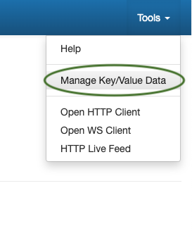
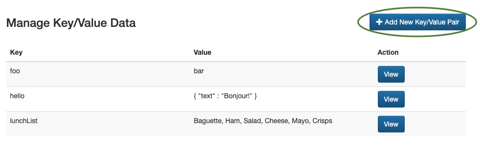
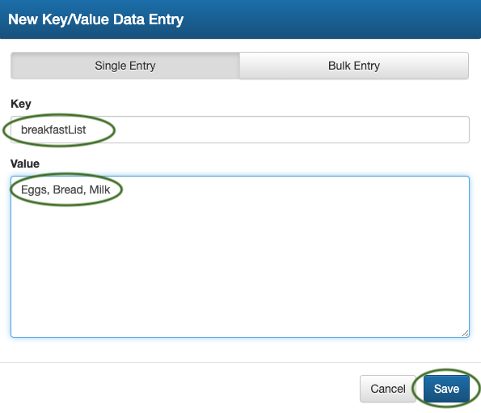
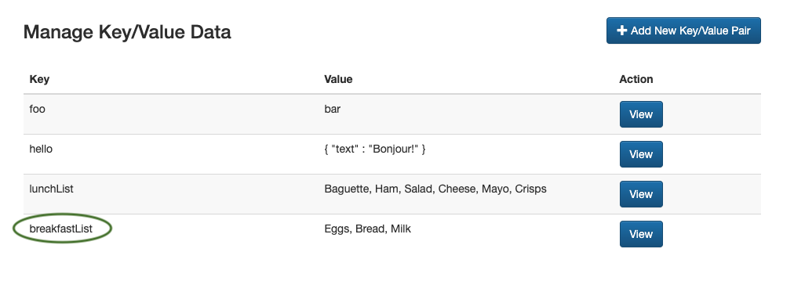
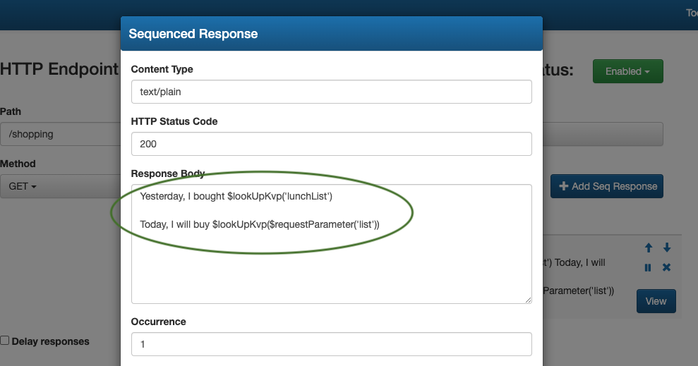
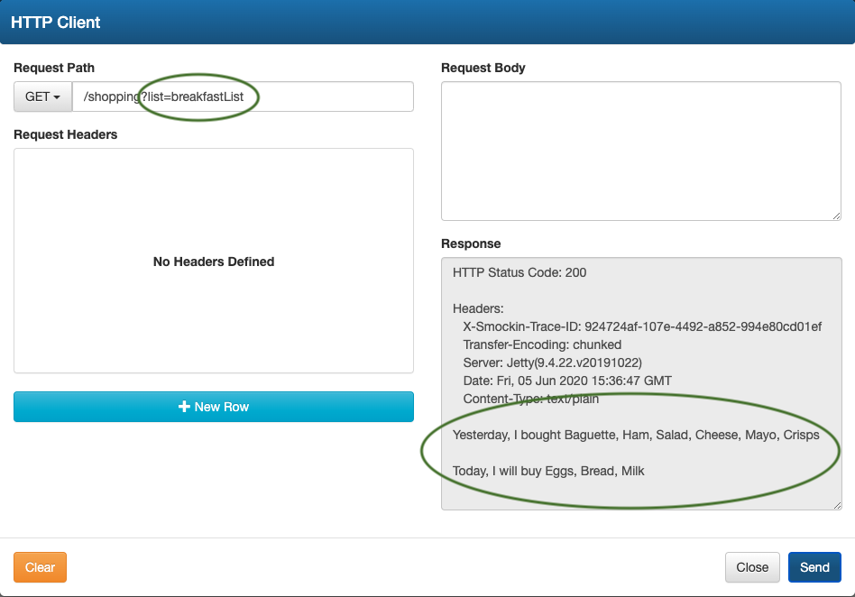
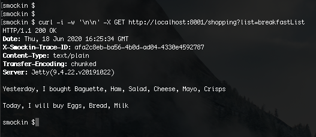

You can store Key/Value data pairs within sMockin, which can be later recalled in your mock responses
using either
Response Variables or
Custom Javascript.
To see this in action, please follow the steps below.
1. Open the
Tools drop down menu, from the top right hand corner of the dashboard and select
Manage Key / Value Data

2. Start by adding a new key / value data pair

3. Enter your chosen data and click
Save

4. Once saved, your data entry should be listed like so

5. The
lookUpKvp keyword is used to load in data into a mock's response.
(In this example we'll assume we have a mock called
GET /shopping).
Below shows
$lookUpKvp in use with
Response Variables and provides examples of doing a data
lookup with a fixed keyword (i.e 'lunchList') as well as a more dynamic lookup, by using the value of the
inbound request parameter 'list'.

6. Calling the
GET /shopping with the request parameter
list set to
breakfastList allows us to see this
in action resulting with the following mock response

(The same
GET /shopping call using cURL)

Below are some reference examples of how you can use
lookUpKvp to do different types of fixed and dynamic lookups
$lookUpKvp in Response Variables
$lookUpKvp('key')
$lookUpKvp($requestParameter('name'))
$lookUpKvp($requestHeader('name'))
$lookUpKvp($requestBody)
lookUpKvp() function in Custom Javascript
lookUpKvp('name');
lookUpKvp(request.parameters.name);
lookUpKvp(request.headers.name);
lookUpKvp(request.body);